library(tidyverse) |> suppressPackageStartupMessages()
no2 <- read_csv(system.file("external/no2.csv",
package = "gstat"), show_col_types = FALSE)12 Spatial Interpolation
Spatial interpolation is the activity of estimating values of spatially continuous variables (fields) for spatial locations where they have not been observed, based on observations. The statistical methodology for spatial interpolation, called geostatistics, is concerned with the modelling, prediction, and simulation of spatially continuous phenomena. The typical problem is a missing value problem: we observe a property of a phenomenon \(Z(s)\) at a limited number of sample locations \(s_i, i = 1,...,n\), and are interested in the property value at all locations \(s_0\) covering an area of interest, so we have to predict it for unobserved locations. This is also called kriging, or Gaussian Process prediction. In case \(Z(s)\) contains a white noise component \(\epsilon\), as in \(Z(s)=S(s)+\epsilon\) (possibly reflecting measurement error) an alternative but similar goal is to predict or simulate \(S(s)\) rather than \(Z(s)\), which may be called spatial filtering or smoothing.
In this chapter we will show simple approaches for handling geostatistical data, demonstrate simple interpolation methods, and explore modelling spatial correlation, spatial prediction and simulation. Chapter 13 focuses on more complex multivariate and spatiotemporal geostatistical models. We will use package gstat (Pebesma and Graeler 2022; Pebesma 2004), which offers a fairly wide palette of models and options for non-Bayesian geostatistical analysis. Bayesian methods with R implementations are found in Diggle, Tawn, and Moyeed (1998), Diggle and Ribeiro Jr. (2007), Blangiardo and Cameletti (2015), and Wikle, Zammit-Mangion, and Cressie (2019). An overview and comparison of methods for large datasets is given in Heaton et al. (2018).
12.1 A first dataset
We can read station mean NO\(_2\) values, a dataset that is prepared in Chapter 13, by loading it from package gstat using
and convert it into an sf object with an appropriate UTM projection using
library(sf)
# Linking to GEOS 3.11.1, GDAL 3.6.2, PROJ 9.1.1; sf_use_s2() is TRUE
crs <- st_crs("EPSG:32632")
st_as_sf(no2, crs = "OGC:CRS84", coords =
c("station_longitude_deg", "station_latitude_deg")) |>
st_transform(crs) -> no2.sfNext, we can load country boundaries and plot these data using ggplot, shown in Figure 12.1.
read_sf("data/de_nuts1.gpkg") |> st_transform(crs) -> deCode
ggplot() + geom_sf(data = de) +
geom_sf(data = no2.sf, mapping = aes(col = NO2))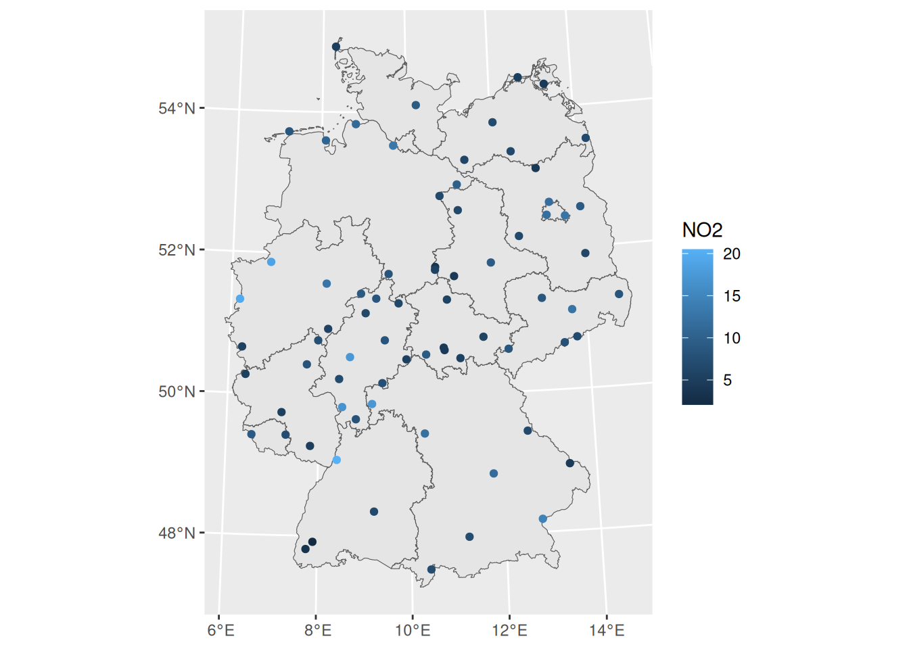
If we want to interpolate, we first need to decide where. This is typically done on a regular grid covering the area of interest. Starting with the country outline in object de we can create a regular 10 km \(\times\) 10 km grid over Germany by
library(stars) |> suppressPackageStartupMessages()
st_bbox(de) |>
st_as_stars(dx = 10000) |>
st_crop(de) -> grd
grd
# stars object with 2 dimensions and 1 attribute
# attribute(s):
# Min. 1st Qu. Median Mean 3rd Qu. Max. NA's
# values 0 0 0 0 0 0 2076
# dimension(s):
# from to offset delta refsys x/y
# x 1 65 280741 10000 WGS 84 / UTM z... [x]
# y 1 87 6101239 -10000 WGS 84 / UTM z... [y]Here, we chose grid cells not too fine, so that we still see them in plots.
Perhaps the simplest interpolation method is inverse distance weighted interpolation, which is a weighted average, using weights inverse proportional to distances from the interpolation location:
\[ \hat{z}(s_0) = \frac{\sum_{i=1}^{n} w_i z(s_i)}{\sum_{i=1}^n w_i} \]
with \(w_i = |s_0-s_i|^{-p}\), and the inverse distance power \(p\) typically taken as 2, or optimised using cross-validation. We can compute inverse distance interpolated values using gstat::idw,
library(gstat)
i <- idw(NO2~1, no2.sf, grd)
# [inverse distance weighted interpolation]and plot them in Figure 12.2.
Code
ggplot() + geom_stars(data = i,
aes(fill = var1.pred, x = x, y = y)) +
xlab(NULL) + ylab(NULL) +
geom_sf(data = st_cast(de, "MULTILINESTRING")) +
geom_sf(data = no2.sf)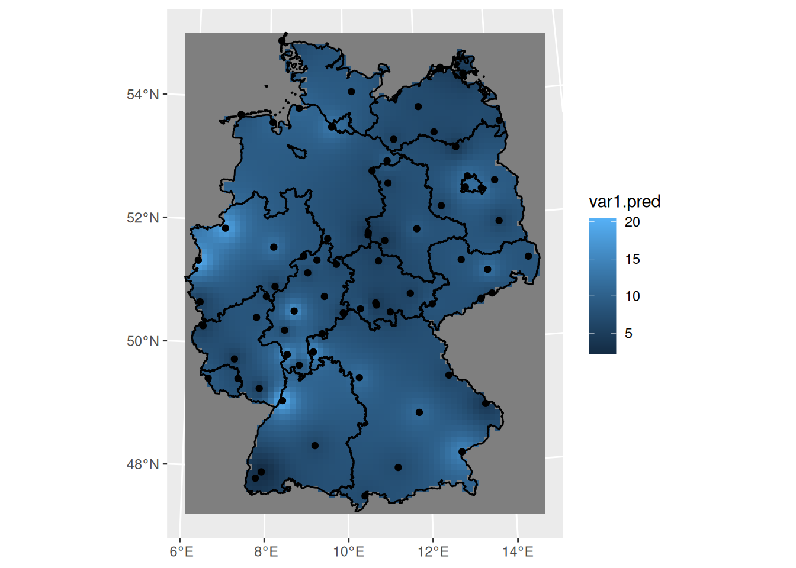
12.2 Sample variogram
In order to make spatial predictions using geostatistical methods, we first need to identify a model for the mean and for the spatial correlation. In the simplest model, \(Z(s) = m + e(s)\), the mean is an unknown constant \(m\), and in this case the spatial correlation can be modelled using the variogram, \(\gamma(h) = 0.5 E (Z(s)-Z(s+h))^2\). For processes with a finite variance \(C(0)\), the variogram is related to the covariogram or covariance function through \(\gamma(h) = C(0)-C(h)\).
The sample variogram is obtained by computing estimates of \(\gamma(h)\) for distance intervals, \(h_i = [h_{i,0},h_{i,1}]\): \[ \hat{\gamma}(h_i) = \frac{1}{2N(h_i)}\sum_{j=1}^{N(h_i)}(z(s_i)-z(s_i+h'))^2, \ \ h_{i,0} \le h' < h_{i,1} \tag{12.1}\]
with \(N(h_i)\) the number of sample pairs available for distance interval \(h_i\). Function gstat::variogram computes sample variograms,
v <- variogram(NO2~1, no2.sf)and the result of plotting this is shown in Figure 12.3.
Code
plot(v, plot.numbers = TRUE, xlab = "distance h [m]",
ylab = expression(gamma(h)),
xlim = c(0, 1.055 * max(v$dist)))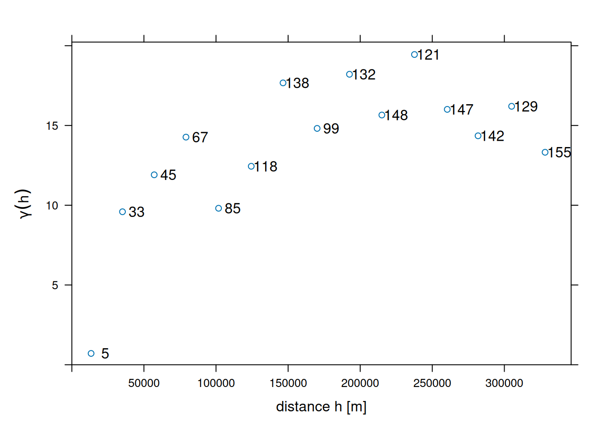
Function variogram chooses default for maximum distance (cutoff: one-third of the length of the bounding box diagonal) and (constant) interval widths (width: cutoff divided by 15). These defaults can be changed by
v0 <- variogram(NO2~1, no2.sf, cutoff = 100000, width = 10000)shown in Figure 12.4.
Code
plot(v0, plot.numbers = TRUE, xlab = "distance h [m]",
ylab = expression(gamma(h)),
xlim = c(0, 1.055 * max(v0$dist)))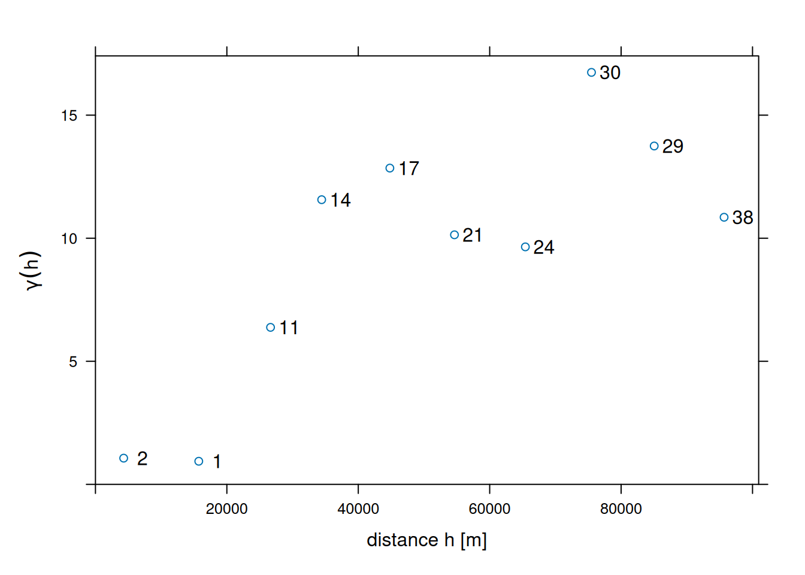
Note that the formula NO2~1 is used to select the variable of interest from the data file (NO2), and to specify the mean model: ~1 specifies an intercept-only (unknown, constant mean) model.
12.3 Fitting variogram models
In order to progress towards spatial predictions, we need a variogram model \(\gamma(h)\) for (potentially) all distances \(h\), rather than the set of estimates derived above. If we would connect these estimates with straight lines, or assume they reflect constant values over their respective distance intervals, it would lead to statistical models with non-positive definite covariance matrices, which would block using them in prediction.
To avoid this, we fit parametric models \(\gamma(h)\) to the estimates \(\hat{\gamma}(h_i)\), where we take \(h_i\) as the mean value of all the \(h'\) values involved in estimating \(\hat{\gamma}(h_i)\). We can fit for instance a model with an exponential variogram by
v.m <- fit.variogram(v, vgm(1, "Exp", 50000, 1))shown by the solid line in Figure 12.5.
Code
fit.variogram_ml <- function(formula, data, init, ...) {
stopifnot(nrow(init) <= 2, inherits(data, "sf"), inherits(formula, "formula"),
inherits(init, "variogramModel"))
if (nrow(init) == 2)
stopifnot("Nug" %in% init$model)
# convert from parameter vector to "variogramModel" class:
# x is c(sill, range) or: c(sill, range, nugget)
get_model <- function(x, model, min_range = 1e-10) {
sill <- x[1]
range <- max(x[2], min_range)
nugget <- if (length(x) == 3)
x[3]
else
0.
m <- vgm(sill, model, range, nugget)
}
# with A <- chol(Q), solve Q x = b for x:
ch_solve <- function(A, b) {
backsolve(A, forwardsolve(A, b, upper.tri = TRUE, transpose = TRUE))
}
# negative log likelihood, excluding the constant:
nll <- function(x, d, res, model, ...) {
m <- get_model(x, model, ...)
Q <- variogramLine(m, dist_vector = d, covariance = TRUE)
Qc <- chol(Q)
det <- 2 * sum(log(diag(Qc)))
det + t(res) %*% ch_solve(Qc, res)
}
# distance matrix, for optim stability rescaled to [0,1] range
d <- st_distance(data) |> units::drop_units()
max_d <- max(d)
d <- d / max_d
# residuals y - X beta: scale to sd 1
res <- residuals(lm(formula, data))
v <- var(res)
res <- res/sqrt(v)
if (nrow(init) == 2) {
o.init <- c(init$psill[2], init$range[2], init$psill[0])
model <- as.character(init$model[2])
} else {
o.init <- c(init$psill[1], init$range[1])
model <- as.character(init$model[1])
}
o.init[2] <- o.init[2] / max_d # scale to [0,1]
o.init[-2] <- o.init[-2] / v # scale to sd 1
o <- optim(o.init, nll, d = d, res = res, model = model,
lower = rep(0, length(o.init)), method = "L-BFGS-B", ...)$par
o[2] <- o[2] * max_d # scale back to distance units
o[-2] <- o[-2] * v # scale back to variance v
get_model(o, model)
}
# use WLS fit model v.m for initial parameters:
v.ml <- fit.variogram_ml(NO2~1, no2.sf, v.m)
# plot(v, v.ml, plot.numbers = TRUE)
# plot(v, v.m, plot.numbers = TRUE) ## draws a single model; draw 2 models in single plot:
par(xaxs = "i", yaxs = "i")
plot(gamma ~ dist, v,
xlim = c(0, 1.075 * max(v$dist)), ylim = c(0, 1.05 * max(v$gamma)),
xlab = "distance h [m]", ylab = expression(gamma(h)))
lines(variogramLine(v.m, 1.075 * max(v$dist)), lty = 1, col = 'blue')
lines(variogramLine(v.ml, 1.075 * max(v$dist)), lty = 2, col = 'blue')
text(v$dist, v$gamma, v$np, pos = 4)The fitting for the drawn line was done by weighted least squares, minimising \[
\sum_{i=1}^{n}w_i(\gamma(h_i)-\hat{\gamma}(h_i))^2,
\tag{12.2}\] with weights \(w_i\) by default equal to \(N(h_i)/h^2\). Other weight options are available through argument fit.method.
As an alternative to weighted least squares fitting, one can use maximum likelihood (ML) or restricted maximum likelihood parameter estimation (Kitanidis and Lane 1985), which for this case leads to a relatively similar fitted model, shown as the dashed line in Figure 12.5. An advantage of ML-type approaches is that they do not require choosing distance intervals \(h_i\) in Equation 12.1 or weights \(w_i\) in Equation 12.2. Disadvantages are that they lean on stronger assumptions of multivariate normally distributed data, and for larger datasets require iteratively solving linear systems of size equal to the number of observations; Heaton et al. (2018) compare approaches dedicated to fitting models to large datasets.
12.4 Kriging interpolation
Typically, when we interpolate a variable, we do that on points on a regular grid covering the target area. We first create a stars object with a raster covering the target area, and NAs outside it.
Kriging involves the prediction of \(Z(s_0)\) at arbitrary locations \(s_0\). We can krige NO\(_2\) by using gstat::krige, with the model for the trend, the data, the prediction grid, and the variogram model as arguments (Figure 12.6) by:
k <- krige(NO2~1, no2.sf, grd, v.m)
# [using ordinary kriging]ggplot() + geom_stars(data = k, aes(fill = var1.pred, x = x, y = y)) +
xlab(NULL) + ylab(NULL) +
geom_sf(data = st_cast(de, "MULTILINESTRING")) +
geom_sf(data = no2.sf) +
coord_sf(lims_method = "geometry_bbox")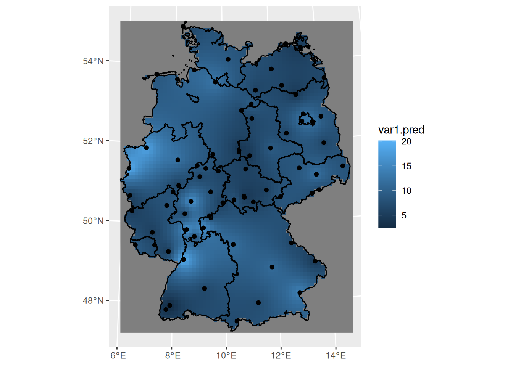
12.5 Areal means: block kriging
Computing areal means can be done in several ways. The simplest is to take the average of point samples falling inside the target polygons:
a <- aggregate(no2.sf["NO2"], by = de, FUN = mean)A more complicated way is to use block kriging (Journel and Huijbregts 1978), which uses all the data to estimate the mean of the variable over the target areas. With krige, this can be done by giving the target areas (polygons) as the newdata argument:
b <- krige(NO2~1, no2.sf, de, v.m)
# [using ordinary kriging]we can now merge the two maps into a single object to create a single plot (Figure 12.7):
b$sample <- a$NO2
b$kriging <- b$var1.predb |> select(sample, kriging) |>
pivot_longer(1:2, names_to = "var", values_to = "NO2") -> b2
b2$var <- factor(b2$var, levels = c("sample", "kriging"))
ggplot() + geom_sf(data = b2, mapping = aes(fill = NO2)) + facet_wrap(~var) +
scale_fill_gradientn(colors = sf.colors(20))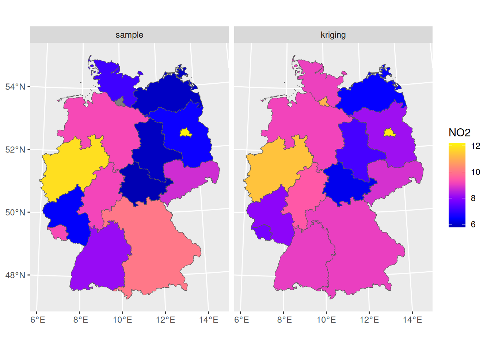
We see that the signal is similar, but that the sample means from simple averaging are more variable than the block kriging values; this may be due to the smoothing effect of kriging: data points outside the aggregation area receive weight, too.
To compare the standard errors of means, for the sample mean we can get a rough guess of the standard error by \(\sqrt{(\sigma^2/n)}\):
SE <- function(x) sqrt(var(x)/length(x))
a <- aggregate(no2.sf["NO2"], de, SE)which would have been the actual estimate in design-based inference (Section 10.4) if the sample were obtained by spatially random sampling. The block kriging variance is the model-based estimate and is a by-product of kriging. We can compare the two in Figure 12.8 where we see that the simple averaging approach gives more variability and mostly larger values for prediction errors of areal means, compared to block kriging.
Code
b$sample <- a$NO2
b$kriging <- sqrt(b$var1.var)
b |> select(sample, kriging) |>
pivot_longer(1:2, names_to = "var",
values_to = "Standard_error") -> b2
b2$var <- factor(b2$var, levels = c("sample", "kriging"))
ggplot() +
geom_sf(data = b2, mapping = aes(fill = Standard_error)) +
facet_wrap(~var, as.table = FALSE) +
scale_fill_gradientn(colors = sf.colors(20))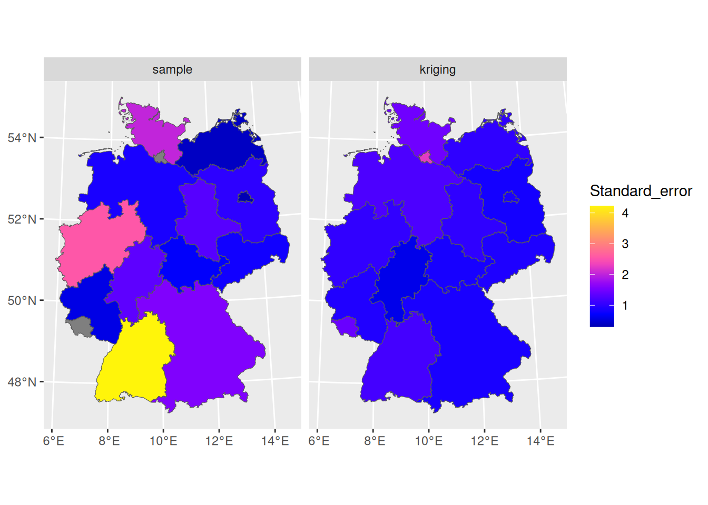
12.6 Conditional simulation
In case one or more conditional realisation of the field \(Z(s)\) are needed rather than their conditional mean, we can obtain this by conditional simulation. A reason for wanting this may be the need to estimate areal mean values of \(g(Z(s))\) with \(g(\cdot)\) a non-linear function; a simple example is the areal fraction where \(Z(s)\) exceeds a threshold.
The default approach used by gstat is to use the sequential simulation algorithm for this. This is a simple algorithm that randomly steps through the prediction locations and at each location:
- carries out a kriging prediction
- draws a random variable from the normal distribution with mean and variance equal to the kriging variance
- adds this value to the conditioning dataset
- finds a new random simulation location
until all locations have been visited.
This is carried out by gstat::krige when nsim is set to a positive value:
set.seed(13341)
(s <- krige(NO2~1, no2.sf, grd, v.m, nmax = 30, nsim = 6))
# drawing 6 GLS realisations of beta...
# [using conditional Gaussian simulation]
# stars object with 3 dimensions and 1 attribute
# attribute(s):
# Min. 1st Qu. Median Mean 3rd Qu. Max. NA's
# var1 -5.7 6.12 8.68 8.88 11.5 23.9 12456
# dimension(s):
# from to offset delta refsys values x/y
# x 1 65 280741 10000 WGS 84 / UTM z... NULL [x]
# y 1 87 6101239 -10000 WGS 84 / UTM z... NULL [y]
# sample 1 6 NA NA NA sim1,...,sim6where set.seed() was called here to allow reproducibility.
It is usually needed to constrain the (maximum) number of nearest neighbours to include in kriging estimation by setting nmax because the dataset grows each step, leading otherwise quickly to very long computing times and large memory requirements. Resulting conditional simulations are shown in (Figure 12.9).
Code
library(viridis)
g <- ggplot() + coord_equal() +
scale_fill_viridis() +
theme_void() +
scale_x_discrete(expand=c(0,0)) +
scale_y_discrete(expand=c(0,0))
g + geom_stars(data = s[,,,1:6]) + facet_wrap(~sample)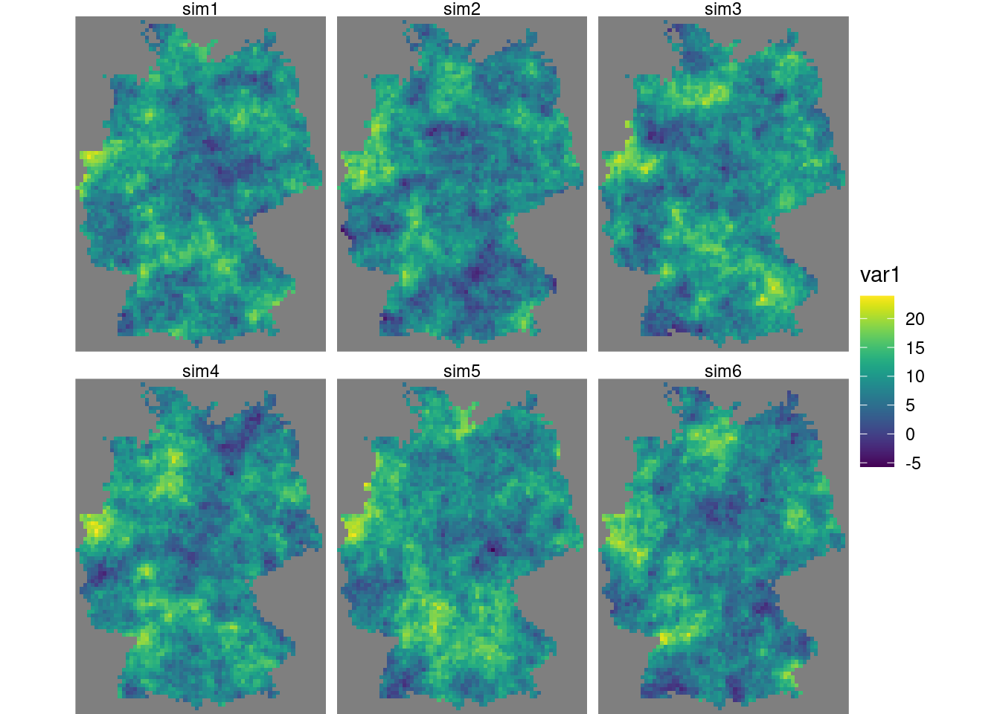
Alternative methods for conditional simulation have recently been added to gstat, and include krigeSimCE implementing the circular embedding method (Davies and Bryant 2013), and krigeSTSimTB implementing the turning bands method (Schlather 2011). These are of particular of interest for larger datasets or conditional simulations of spatiotemporal data.
12.7 Trend models
Kriging and conditional simulation, as used so far in this chapter, assume that all spatial variability is a random process, characterised by a spatial covariance model. In case we have other variables that are meaningfully correlated with the target variable, we can use them in a linear regression model for the trend, \[ Z(s) = \sum_{j=0}^p \beta_j X_j(s) + e(s) \] with \(X_0(s) = 1\) and \(\beta_0\) an intercept, but with the other \(\beta_j\) regression coefficients. Adding variables typically reduces both the spatial correlation in the residual \(e(s)\), as well as its variance, and leads to more accurate predictions and more similar conditional simulations. As an example, we will use population density to partly explain variation in NO\(_2\).
A population grid
As a potential predictor for NO\(_2\) in the air, we use population density. NO\(_2\) is mostly caused by traffic, and traffic is more intense in densely populated areas. Population density is obtained from the 2011 census and is downloaded as a csv file with the number of inhabitants per 100 m \(\times\) 100 m grid cell. We can aggregate these data to the target grid cells by summing the inhabitants:
v <- vroom::vroom("aq/pop/Zensus_Bevoelkerung_100m-Gitter.csv")
v |> filter(Einwohner > 0) |>
select(-Gitter_ID_100m) |>
st_as_sf(coords = c("x_mp_100m", "y_mp_100m"), crs = 3035) |>
st_transform(st_crs(grd)) -> b
a <- aggregate(b, st_as_sf(grd, na.rm = FALSE), sum)Now we have the population counts per grid cell in a. To get to population density, we need to find the area of each cell; for cells crossing the country border, this will be less than 10 \(\times\) 10 km:
grd$ID <- 1:prod(dim(grd)) # to identify grid cells
ii <- st_intersects(grd["ID"],
st_cast(st_union(de), "MULTILINESTRING"), as_points = FALSE)
grd_sf <- st_as_sf(grd["ID"], na.rm = FALSE)[lengths(ii) > 0,]
st_agr(grd_sf) = "identity"
iii <- st_intersection(grd_sf, st_union(de))
grd$area <- st_area(grd)[[1]] +
units::set_units(grd$values, m^2)
grd$area[iii$ID] <- st_area(iii)Instead of doing the two-stage procedure above, first finding cells that have a border crossing it then computing its area, we could also directly use st_intersection on all cells, but that takes considerably longer. From the counts and areas we can compute densities (Figure 12.10) and verify totals
grd$pop_dens <- a$Einwohner / grd$area
sum(grd$pop_dens * grd$area, na.rm = TRUE) # verify
# 80323301 [1]
sum(b$Einwohner)
# [1] 80324282which indicates strong agreement. Using st_interpolate_aw would have given an exact match.
Code
g + geom_stars(data = grd, aes(fill = sqrt(pop_dens), x = x, y = y))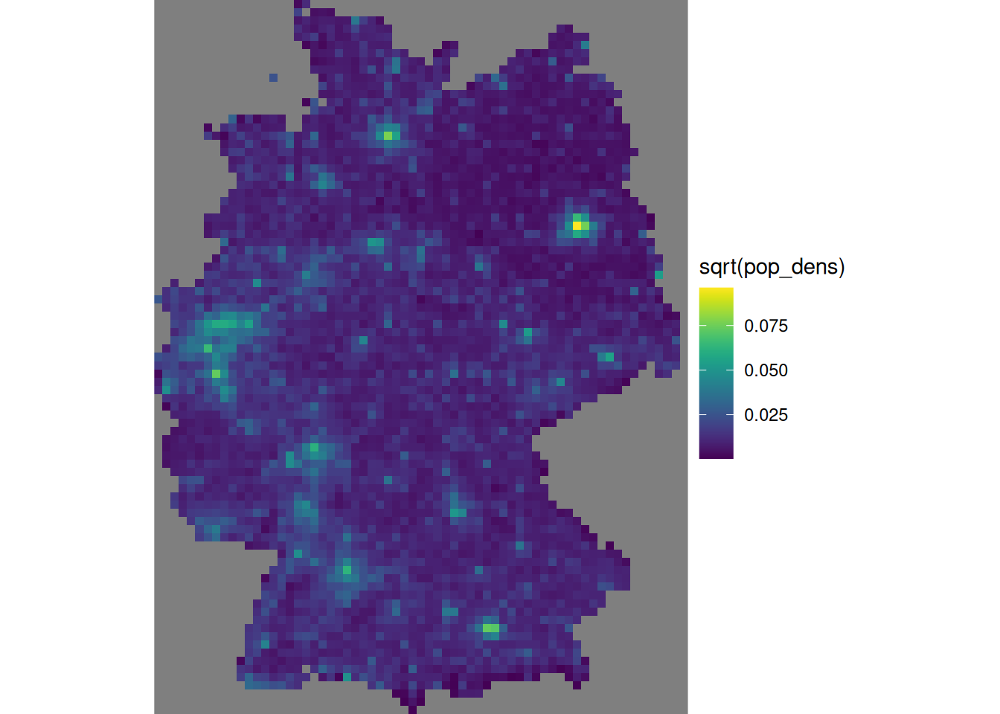
We need to divide the number of inhabitants by the number of 100 m \(\times\) 100 m grid cells contributing to it, in order to convert population counts into population density.
To obtain population density values at monitoring network stations, we can use st_extract:
grd |>
select("pop_dens") |>
st_extract(no2.sf) |>
pull("pop_dens") |>
mutate(no2.sf, pop_dens = _) -> no2.sfWe can then investigate the linear relationship between NO\(_2\) and population density at monitoring station locations:
summary(lm(NO2~sqrt(pop_dens), no2.sf))
#
# Call:
# lm(formula = NO2 ~ sqrt(pop_dens), data = no2.sf)
#
# Residuals:
# Min 1Q Median 3Q Max
# -7.990 -2.052 -0.505 1.610 8.095
#
# Coefficients:
# Estimate Std. Error t value Pr(>|t|)
# (Intercept) 4.537 0.685 6.62 5.5e-09 ***
# sqrt(pop_dens) 326.154 49.366 6.61 5.8e-09 ***
# ---
# Signif. codes: 0 '***' 0.001 '**' 0.01 '*' 0.05 '.' 0.1 ' ' 1
#
# Residual standard error: 3.13 on 72 degrees of freedom
# Multiple R-squared: 0.377, Adjusted R-squared: 0.369
# F-statistic: 43.7 on 1 and 72 DF, p-value: 5.82e-09for which the corresponding scatterplot is shown in Figure 12.11.
Code
plot(NO2 ~ sqrt(pop_dens), no2.sf)
abline(lm(NO2 ~ sqrt(pop_dens), no2.sf))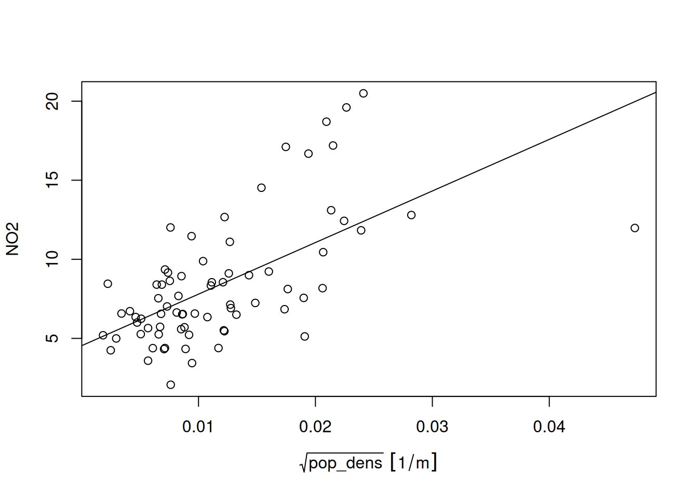
Prediction under this new model involves first modelling a residual variogram
no2.sf <- no2.sf[!is.na(no2.sf$pop_dens),]
vr <- variogram(NO2~sqrt(pop_dens), no2.sf)
vr.m <- fit.variogram(vr, vgm(1, "Exp", 50000, 1))Code
plot(vr, vr.m, plot.numbers = TRUE)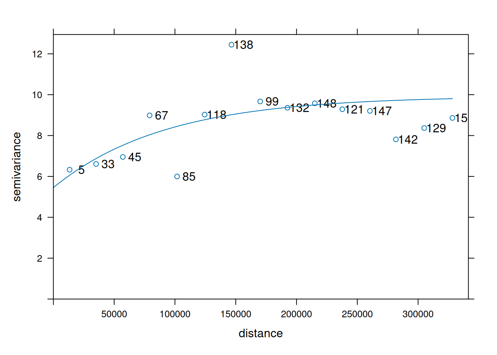
which is shown in Figure 12.12. Subsequently, kriging prediction (Figure 12.13) is done by
kr <- krige(NO2 ~ sqrt(pop_dens), no2.sf,
grd["pop_dens"], vr.m)
# [using universal kriging]Code
k$kr1 <- k$var1.pred
k$kr2 <- kr$var1.pred
st_redimension(k[c("kr1", "kr2")],
along = list(what = c("kriging", "residual kriging"))) |>
setNames("NO2") -> km
g + geom_stars(data = km, aes(fill = NO2, x = x, y = y)) +
geom_sf(data = st_cast(de, "MULTILINESTRING")) +
geom_sf(data = no2.sf) + facet_wrap(~what) +
coord_sf(lims_method = "geometry_bbox")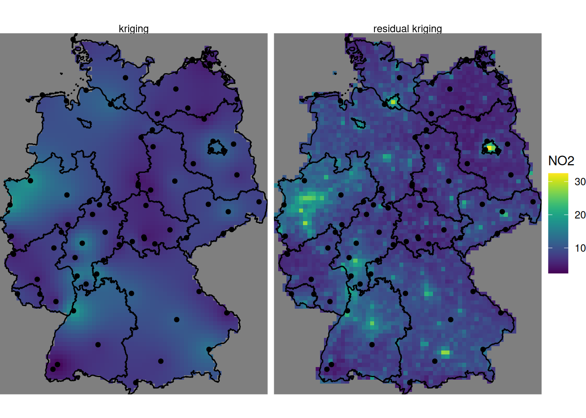
where, critically, the pop_dens values are now available for prediction locations in the newdata object grd.
Compared to (ordinary) kriging We see some clear differences: the map using population density in the trend follows the extremes of the population density rather than those of the measurement stations, and has a value range that extends that of ordinary kriging. It should be taken with a large grain of salt however, since the stations used were filtered for the category “rural background”, indicating that they only represent conditions of lower populations density. The scatter-plot of Figure 12.11 reveals that the the population density at the locations of stations is much more limited than that in the population density map, and hence the right-hand side map is based on strongly extrapolating the relationship shown in Figure 12.11.
12.8 Exercises
- Create a plot like the one in Figure 12.13 that has the inverse distance interpolated map of Figure 12.2 added on the left side.
- Create a scatter-plot of the map values of the idw and kriging map, and a scatter-plot of map values of idw and residual kriging.
- Carry out a block kriging, predicting block averages for blocks centred over grid cells, by setting the
blockargument inkrige(), and do this for block sizes of 10 km (grid cell size), 50 km, and 200 km. Compare the resulting maps of estimates for these three block sizes with those obtained by point kriging, and do the same thing for all associated kriging standard errors. - Based on the residual kriging results obtained above, compute maps of the lower and upper boundary of a 95% confidence interval, when assuming that the kriging error is normally distributed, and show them in a plot with a single (joint) legend.
- Compute and show the map with the probabilities that NO\(_2\) point values exceed the level of 15 ppm, assuming normally distributed kriging errors.